开心果 Need Car · 2023-11-22T12:04:00+08:00 · 微信原文
1、为什么需要组播？
思考为什么需要组播之前，我们先类比一个工作场景：某件事，你想告诉同事A和同事B。于是，你建立一个小群Group Chat 1，群里包括：你、同事A、同事B。如此，你就可以在Group Chat 1内发送消息，而且这些消息，只有在Group Chat 1内的成员可以收到。同样的，在工程中，当某些消息只想通知到特定节点时，只要这些节点加入特定群组，即可获取群组内的消息，eg：Some/IP的SD（Service Discovery）。
如此，带来什么好处呢？相对于单播，可以不必同样的消息多次发送，降低了总线负载；相对于广播，非相关节点，不接收此消息。所以，当消息只想发送给一些特定节点时，即可使用组播。
2、组播基础
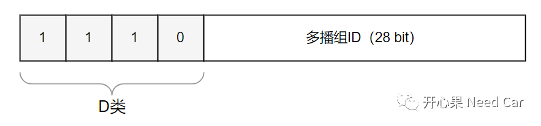
（二）组播与IGMP
在单个以太网网段内，组播传输相对简单。如果涉及到多个网段时，组播数据则需要经过路由器，如此，就需要用到IGMP (Internet Group Management Protocol，网络组管理协议) 。本文不过多展开IGMP，只做简单介绍，IGMP格式如下:
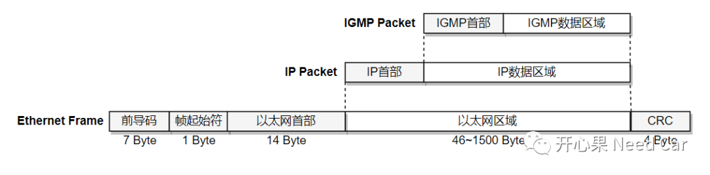
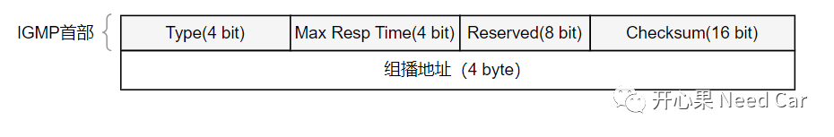
3、基于Lwip+Tc3xx的组播实现
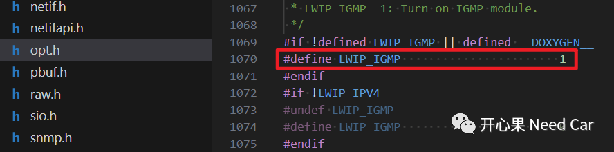
（二）netif中启用NETIF_FLAG_IGMP
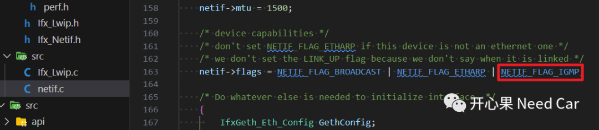
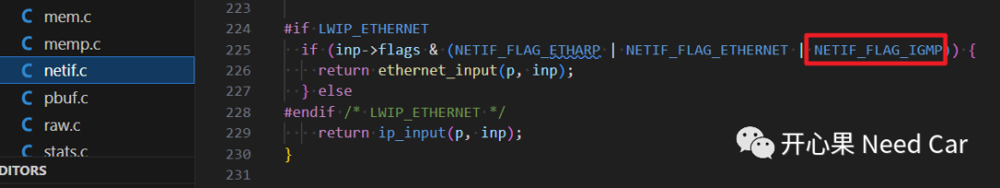
（三）禁用组播过滤
1、在IfxGeth_Eth.c文件中，修改过滤模式，如下所示：
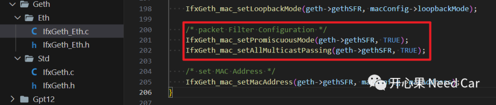
2、对接口IfxGeth_mac_setAllMulticastPassing()进行如下修改：
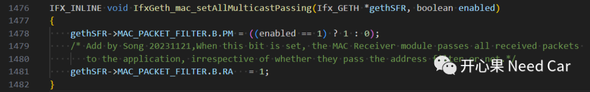
（四）组播代码编辑
组播的实现，代码如下：
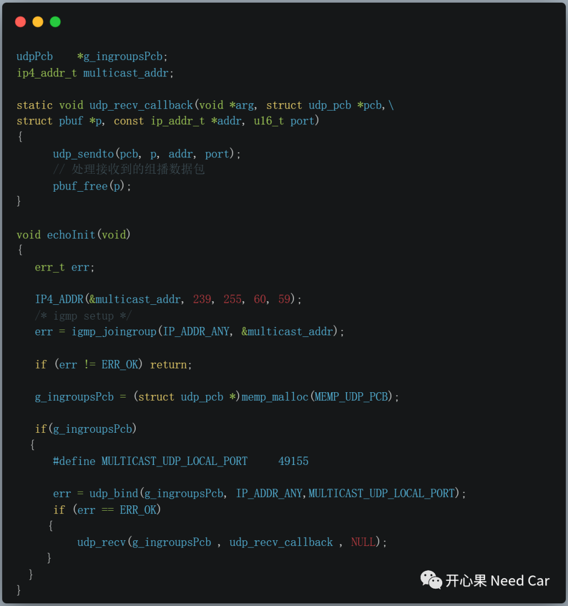
3、组播数据流及源码
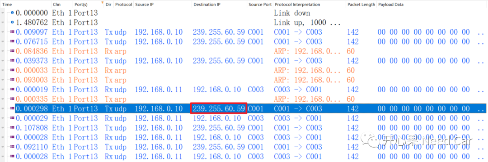
如上信息，某节点向组播地址（ip:239.255.60.59）内发送消息，本文，通过注册的回调函数处理接收到的组播信息。本文处理方式：单播发送（UDP）接收到的信息。发送的组播消息如下所示：
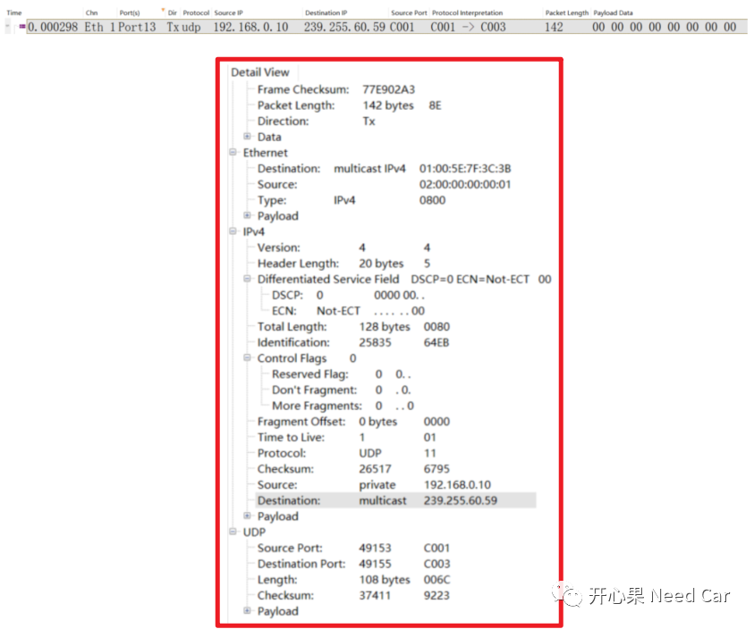
https://github.com/Kaixinguo2021/Tasking_Tc397_Eth_Multicast.git
往期精彩回顾